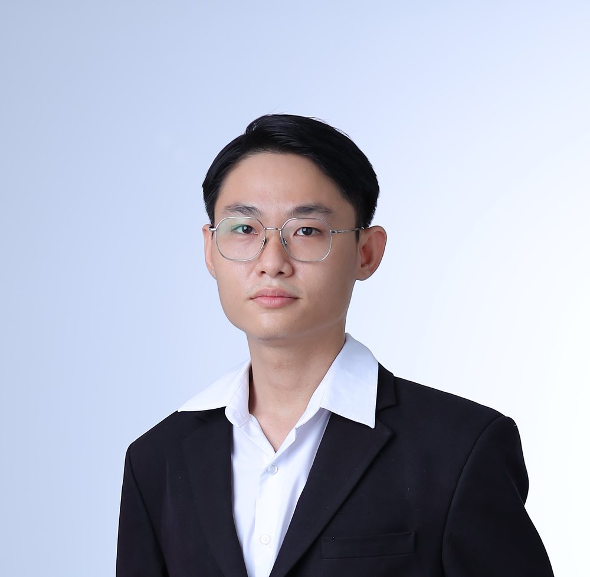
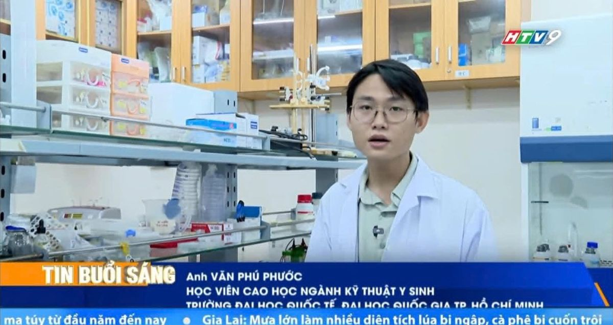
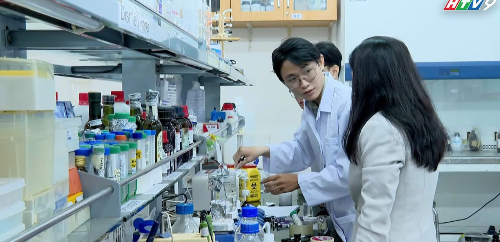
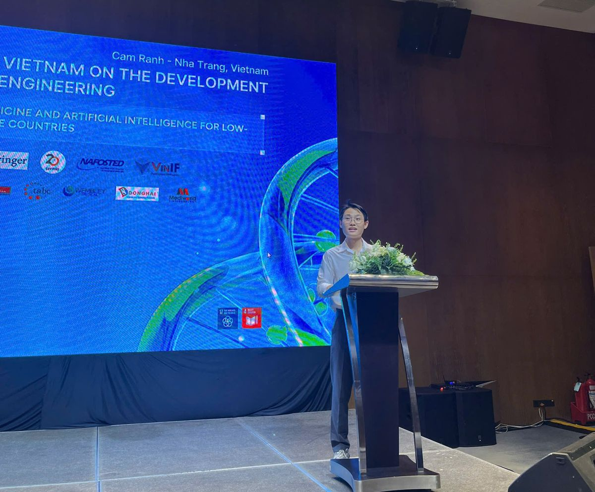

Học viên cao học Kỹ thuật Y sinh · Giáo viên Toán
Văn Phú Phước
Mình nghiên cứu vật liệu sinh học tại Trường Đại học Quốc tế, ĐHQG-HCM và là người sáng lập V2P Education, trung tâm luyện thi cấp 2 và cấp 3.

- Bằng GiỏiCử nhân Công nghệ Sinh học, Trường ĐH Khoa học Tự nhiên, ĐHQG-HCM. GPA 3.49/4.0.
- Học bổng toàn phầnChương trình Thạc sĩ Kỹ thuật Y sinh, Trường ĐH Quốc tế, ĐHQG-HCM.
- Founder V2PSáng lập V2P Education, hiện có 10 giáo viên. Đi dạy từ năm 2020.
Về mình
Mình sống và làm việc tại TP. Hồ Chí Minh. Mình tốt nghiệp loại Giỏi ngành Công nghệ Sinh học, Trường Đại học Khoa học Tự nhiên năm 2025, rồi nhận học bổng toàn phần bậc Thạc sĩ ngành Kỹ thuật Y sinh tại Trường Đại học Quốc tế. Cả hai trường đều thuộc Đại học Quốc gia TP.HCM.
Công việc của mình có hai mảng chạy song song. Ở phòng thí nghiệm, mình làm về nuôi cấy tế bào, y sinh học tái tạo và vật liệu từ tơ tằm. Trên lớp, mình dạy Toán và luyện thi vào lớp 10, thi tốt nghiệp THPT và Đánh giá năng lực cho học sinh.
Hai việc này bổ trợ cho nhau: làm nghiên cứu rèn cho mình cách lập luận chặt chẽ, còn đi dạy rèn cho mình cách giải thích một vấn đề khó sao cho dễ hiểu.
Hình ảnh



Hành trìnhTím: học thuật. Vàng: giảng dạy.
- 2020
Học thuậtGiải Ba Học sinh giỏi cấp Thành phố, môn Sinh học 12
Năm học 2019–2020, khi đang học THPT Võ Trường Toản.
- 2020
Giảng dạyBắt đầu đi dạy tại trung tâm Thuận An, Quận 12
Dạy Toán và Sinh học lớp 12, hỗ trợ tuyển sinh và ôn thi tốt nghiệp.
- 2021
Giảng dạyGia sư độc lập
Tập trung luyện thi THPT và thi tốt nghiệp.
- 2023
Học thuậtKỹ thuật viên Phòng thí nghiệm Y sinh học tái tạo
Trường ĐH Khoa học Tự nhiên, ĐHQG-HCM. Đề tài về cơ chế xơ gan.
- 2025
Học thuậtTốt nghiệp cử nhân loại Giỏi
Bảo vệ khóa luận, báo cáo theo lời mời tại phòng thí nghiệm (tháng 2) và báo cáo tại Hội nghị Khoa học trẻ lần II (tháng 6).
- 2025
Giảng dạySáng lập V2P Education
Học sinh khóa 2k7 đậu Bách khoa, Kinh tế – Luật, Quốc tế, Khoa học Xã hội và Nhân văn, Sư phạm TP.HCM, Luật TP.HCM và nhiều trường khác.
- 2026
Học thuậtCông bố bài báo quốc tế và nhận học bổng toàn phần Thạc sĩ
Bài báo trên Trends in Sciences (tháng 2), báo cáo theo lời mời tại Trường ĐH Tôn Đức Thắng (tháng 5), thành viên ban tổ chức và báo cáo viên Hội nghị BME11 (tháng 7), nhập học Thạc sĩ Kỹ thuật Y sinh tại Trường ĐH Quốc tế (tháng 9).
- 2026
Giảng dạyV2P Education có 10 giáo viên
Học sinh khóa 2k8 đậu Ngoại thương, Bách khoa, Kinh tế TP.HCM, Kinh tế – Luật, Khoa học Tự nhiên, Sư phạm TP.HCM và nhiều trường khác.
Học sinh đã đậu vàoHai khóa 2k7 và 2k8
- ĐH Ngoại thương
- ĐH Bách khoa
- ĐH Kinh tế TP.HCM
- ĐH Kinh tế – Luật
- ĐH Khoa học Tự nhiên
- ĐH Quốc tế
- ĐH Khoa học Xã hội và Nhân văn
- ĐH Sư phạm TP.HCM
- ĐH Công nghệ Kỹ thuật TP.HCM
- ĐH Luật TP.HCM
- ĐH Ngân hàng TP.HCM
- ĐH Giao thông vận tải TP.HCM
- ĐH Công nghiệp TP.HCM
- ĐH Công Thương TP.HCM
- ĐH Nông Lâm TP.HCM
- ĐH Mở TP.HCM
- ĐH Sài Gòn
- ĐH Y Dược Huế
- ĐH Kinh tế Đà Nẵng
- Học viện Công nghệ Bưu chính Viễn thông
- Học viện Hành chính và Quản trị công
- ĐH Hoa Sen
- ĐH Nguyễn Tất Thành
- ĐH Văn Lang
Xem tiếp
Học thuật
Nghiên cứu vật liệu sinh học và y sinh học tái tạo
Học vấn, đề tài, công bố khoa học, các buổi báo cáo theo lời mời và hoạt động hỗ trợ giảng dạy ở bậc đại học.
Học vấn
Thạc sĩ Kỹ thuật Y sinh (đang học)
Từ 9/2026Trường Đại học Quốc tế, ĐHQG-HCM. Học bổng toàn phần.
Cử nhân Công nghệ Sinh học
Khóa 2020 · tốt nghiệp 2025Trường Đại học Khoa học Tự nhiên, ĐHQG-HCM. Loại Giỏi, GPA 3.49/4.0.
Lĩnh vực quan tâm
- Vật liệu sinh học
- Y học tái tạo
- Kỹ nghệ mô
- Nuôi cấy tế bào
- In sinh học 3D
- Hệ dẫn truyền thuốc
Công bố khoa học
Dynamic Expression of E2F1 and eEF1A1 During Lipopolysaccharide-Induced Activation of Primary Hepatic Stellate Cells
Thanh Minh Dang#, Phuoc Phu Van#, Trinh Van Le, Uyen Luu Thao Nguyen, Tu Nguyen Anh Le, Nhan Ngo The Tran, Long Thanh Le, Nhung Hai Truong. Trends in Sciences, 2026; 23(7): 11708. Xuất bản ngày 10/02/2026.
# Hai tác giả đóng góp ngang nhau.
doi.org/10.48048/tis.2026.11708 →Báo cáo theo lời mờiTrao đổi học thuật
Tổng quan sinh lý trong nuôi cấy tế bào động vật in vitro
Buổi sinh hoạt học thuật của Nhóm Nghiên cứu Dược liệu, Khoa Dược, Trường Đại học Tôn Đức Thắng.
Phân tích dữ liệu hình ảnh trong nghiên cứu bằng phần mềm ImageJ
Buổi báo cáo học thuật tại Phòng thí nghiệm Y sinh học Tái tạo, Trường Đại học Khoa học Tự nhiên, ĐHQG-HCM.
Hội nghị
Hội nghị Quốc tế về sự phát triển Kỹ thuật Y sinh lần thứ 11 (BME11)
29–31/07/2026Thành viên ban tổ chức và báo cáo viên. Cam Ranh, Nha Trang. Hội nghị do Trường Đại học Quốc tế, ĐHQG-HCM phối hợp Trường Đại học Nha Trang tổ chức.
Hội nghị Khoa học trẻ lần II, năm 2025 (VNU-HCMUS YSC 2025)
08/06/2025Báo cáo miệng kết quả nghiên cứu. Trường Đại học Khoa học Tự nhiên, ĐHQG-HCM.
Đề tài nghiên cứu
Vật liệu sinh học từ tơ tằm cho y học tái tạo
Nghiên cứu vật liệu nguồn gốc tơ tằm (silk fibroin) ứng dụng trong chăm sóc vết thương, kỹ nghệ mô và dẫn truyền thuốc.
Biểu hiện gen E2F1 và eEF1A1 khi tế bào hình sao gan được hoạt hóa bởi LPS
Kết quả cho thấy eEF1A1 hoạt động chủ yếu ở giai đoạn sớm, còn E2F1 tăng ở giai đoạn muộn của quá trình hoạt hóa. Đề tài góp thêm dữ liệu để hiểu cơ chế xơ gan và là nền của bài báo trên Trends in Sciences.
- Phân lập và nuôi cấy tế bào sơ cấp
- Phân tích biểu hiện gen bằng RT-qPCR, nhuộm miễn dịch tế bào (ICC)
- Đánh giá khả năng sống và chức năng tế bào: CCK-8, nhuộm Oil Red O
- Chụp hiển vi và định lượng ảnh bằng ImageJ; thiết kế thí nghiệm, phân tích số liệu
Hoạt động ở đại họcHỗ trợ giảng dạy và dẫn dắt nhóm
Ôn thi cuối kỳ môn Tin sinh học
Có video bên dướiHướng dẫn các bạn cùng khóa ôn tập trước kỳ thi.
Ôn tập thực hành Hóa sinh và Sinh học phân tử
Có video bên dướiHệ thống lại kiến thức và thao tác cho các học phần thực hành.
Lớp ôn môn Công nghệ gen
Đến 50 sinh viênBuổi ôn cho bạn học cùng ngành.
Trưởng nhóm nghiên cứu sinh viên
10 thành viênDẫn dắt nhóm 10 sinh viên đại học thực hiện một đề tài nghiên cứu.
Chia sẻ kinh nghiệm làm thí nghiệm
PTN Y sinh học tái tạoHướng dẫn kỹ thuật cho các thành viên trong nhóm nghiên cứu.
Video buổi ôn tậpGhi hình các buổi mình hướng dẫn bạn cùng khóa. Mở trên YouTube.
Giảng dạy & V2P Education
Dạy Toán và luyện thi từ năm 2020
Giới thiệu trung tâm V2P Education, quá trình đứng lớp, kết quả của học sinh và cảm nhận các em gửi lại.
V2P Education
V2P Education là trung tâm chuyên luyện thi cho học sinh cấp 2 và cấp 3 tại TP.HCM, do mình sáng lập năm 2025. Trung tâm hiện có 10 giáo viên. Mình trực tiếp dạy Toán, đồng thời quản lý đội ngũ, biên soạn tài liệu và điều phối chương trình luyện thi.
Lớp học trực tiếp tại TP.HCM và có lớp online song song qua Google Meet.
- Toán lớp 6 đến 12
- Vật lý
- Hóa học
- Tiếng Anh
- Luyện thi Đánh giá năng lực
- Luyện thi tốt nghiệp THPT
Hình ảnh lớp họcBấm vào ảnh để xem lớn
Kết quả nổi bậtTheo khảo sát cuối khóa do học sinh tự điền
- 49 học sinhHai khóa 2k7 và 2k8 báo đậu đại học. 11 em vào các trường thành viên ĐHQG-HCM.
- 9,25 điểm ToánĐiểm thi THPT cao nhất khóa 2k8. 16 trong 19 em báo điểm đạt từ 7 trở lên, trung bình của nhóm này là 8,2.
- 999 điểm ĐGNLĐiểm Đánh giá năng lực cao nhất khóa 2k8. 12 trong 17 em báo điểm đạt từ 800 trở lên.
Hai học sinh đạt trên 1.000 điểm Đánh giá năng lực
Lứa học sinh 2021Thành tích của học sinh luyện thi cùng mình.
Hầu hết học sinh lớp 12 đạt mức 8 điểm và vào các trường đại học lớn
2020Lớp 12 tại trung tâm Thuận An, Quận 12.
Học sinh đậu đại họcSố sau tên trường là số học sinh
- ĐH Công nghiệp TP.HCM (IUH)4
- ĐH Kinh tế TP.HCM (UEH)3
- ĐH Luật TP.HCM3
- ĐH Kinh tế – Luật (UEL)2
- ĐH Khoa học Tự nhiên2
- ĐH Sư phạm TP.HCM2
- ĐH Công nghệ Kỹ thuật TP.HCM (HCMUTE)2
- ĐH Giao thông vận tải TP.HCM (UTH)2
- ĐH Công Thương TP.HCM (HUIT)2
- ĐH Bách khoa1
- ĐH Ngoại thương (cơ sở TP.HCM)1
- ĐH Khoa học Xã hội và Nhân văn1
- ĐH Mở TP.HCM1
- ĐH Sài Gòn1
- Học viện Công nghệ Bưu chính Viễn thông1
- ĐH Y Dược Huế1
- ĐH Kinh tế Đà Nẵng1
Toán THPT: cao nhất 9,25; trung bình 8,2 trong nhóm đạt từ 7 điểm trở lên (16 trong 19 em báo điểm). ĐGNL: trung bình 835, cao nhất 999. Có một em đạt 10 điểm Hóa và 10 điểm Lý.
Danh sách học sinh
- Trần Nguyễn Hà MyĐH Ngoại thương (cơ sở TP.HCM)
- Nguyễn Kim Gia BảoĐH Bách khoa, ĐHQG-HCM
- Trần Nguyễn Hà NguyênĐH Kinh tế TP.HCM (UEH)
- Lê Xuân ThủyĐH Kinh tế TP.HCM (UEH)
- Nguyễn Ngọc Hà MyĐH Kinh tế TP.HCM (UEH)
- Nguyễn Thị Thảo VyĐH Kinh tế – Luật (UEL), ĐHQG-HCM
- Trần Vũ Thuý QuỳnhĐH Kinh tế – Luật (UEL), ĐHQG-HCM
- Nguyễn Phương AnhĐH Khoa học Tự nhiên, ĐHQG-HCM
- Kim Ngọc Hải HuyĐH Khoa học Tự nhiên, ĐHQG-HCM
- Phạm Thuý HiềnĐH Khoa học Xã hội và Nhân văn, ĐHQG-HCM
- Trần Phương LoanĐH Sư phạm TP.HCM
- Võ Huỳnh Minh HiềnĐH Sư phạm TP.HCM
- Nguyễn Bảo PhúcĐH Công nghệ Kỹ thuật TP.HCM (HCMUTE)
- Hà Thị Quỳnh NhưĐH Công nghệ Kỹ thuật TP.HCM (HCMUTE)
- Dương Thị Thu TrangĐH Luật TP.HCM
- Võ Thanh NhânĐH Luật TP.HCM
- Lê Hải DươngĐH Luật TP.HCM
- Nguyễn Mai AnhĐH Công nghiệp TP.HCM (IUH)
- Trần Nguyễn Quang HuyĐH Công nghiệp TP.HCM (IUH)
- Lê Nho Nhật MinhĐH Công nghiệp TP.HCM (IUH)
- Lê Nho Nhật LuânĐH Công nghiệp TP.HCM (IUH)
- Nguyễn Hoàng Chí HuyĐH Giao thông vận tải TP.HCM (UTH)
- Nguyễn Ngọc Phương LinhĐH Giao thông vận tải TP.HCM (UTH)
- Nguyễn Kim PhụngĐH Công Thương TP.HCM (HUIT)
- Phan Kim PhụngĐH Công Thương TP.HCM (HUIT)
- Minh AnhĐH Mở TP.HCM
- Phan Thị Thanh NgọcĐH Sài Gòn
- Lê Thanh HuyềnHọc viện Công nghệ Bưu chính Viễn thông
- Ý VyĐH Y Dược Huế
- Nguyễn Thuỳ LinhĐH Kinh tế Đà Nẵng
- ĐH Giao thông vận tải TP.HCM (UTH)3
- ĐH Bách khoa2
- ĐH Ngân hàng TP.HCM (HUB)2
- ĐH Kinh tế – Luật (UEL)1
- ĐH Quốc tế1
- ĐH Khoa học Xã hội và Nhân văn1
- ĐH Công nghệ Kỹ thuật TP.HCM (HCMUTE)1
- ĐH Sư phạm TP.HCM1
- ĐH Luật TP.HCM1
- ĐH Nông Lâm1
- ĐH Mở TP.HCM1
- Học viện Hành chính và Quản trị công1
- ĐH Hoa Sen1
- ĐH Nguyễn Tất Thành1
- ĐH Văn Lang1
Toán THPT: cao nhất 8,0. ĐGNL: cao nhất 870. Đây là khóa đầu tiên thi theo chương trình mới.
Danh sách học sinh
- Nguyễn Mai Trí DũngĐH Bách khoa, ĐHQG-HCM
- Nguyễn Thị Kim ChiĐH Bách khoa, ĐHQG-HCM
- Võ Ngọc Kim NgânĐH Kinh tế – Luật (UEL), ĐHQG-HCM
- Văn Phú LộcĐH Quốc tế, ĐHQG-HCM
- Phan Thị Thanh ThuýĐH Khoa học Xã hội và Nhân văn, ĐHQG-HCM
- Nguyễn Hồ Tuệ MẫnĐH Công nghệ Kỹ thuật TP.HCM (HCMUTE)
- Hoàng Minh NhậtĐH Sư phạm TP.HCM
- Đoàn Ngọc ThànhĐH Luật TP.HCM
- Thân Minh KhangĐH Ngân hàng TP.HCM (HUB)
- Võ Duy KhôiĐH Ngân hàng TP.HCM (HUB)
- Nguyễn Ngọc Lan PhươngĐH Giao thông vận tải TP.HCM (UTH)
- Nguyễn Hải NamĐH Giao thông vận tải TP.HCM (UTH)
- Trần Nguyễn Hải QuânĐH Giao thông vận tải TP.HCM (UTH)
- Kim HươngĐH Nông Lâm TP.HCM
- Nguyễn Mạnh HùngĐH Mở TP.HCM
- Lê Nguyễn Nhật VyHọc viện Hành chính và Quản trị công
- Vũ Thị Như QuỳnhĐH Hoa Sen
- Nguyễn Khánh DươngĐH Nguyễn Tất Thành
- Huỳnh HânĐH Văn Lang
Học sinh nói gìNguyên văn lời các em viết trong khảo sát cuối khóa
Khóa 2k8 · thi năm 2026
Em thật sự muốn gửi lời cảm ơn đến anh Phước vì trong suốt thời gian học, anh không chỉ nhiệt tình giảng bài mà còn luôn tận tâm chia sẻ những kinh nghiệm, cách học và những góc nhìn rất thực tế.
Điều em ấn tượng nhất chính là sự nhiệt tình của anh. Có những bài Toán tưởng như rất khó, nhưng qua cách anh giải thích lại trở nên dễ hiểu và thú vị hơn rất nhiều. Không chỉ dạy kiến thức, anh còn truyền cho em động lực để cố gắng, kiên trì, vì chính anh cũng đang cố gắng để theo đuổi ước mơ và e có thể cảm nhận sự nhiệt huyết và quyết liệt ấy để lấy làm động lực riêng. Hi vọng sau này em có thể cháy với sức trẻ như a Phước
Cảm ơn anh vì những buổi học đầy năng lượng, vì sự kiên nhẫn, tận tâm và những kinh nghiệm anh đã chia sẻ. Có lẽ điều quý giá nhất em nhận được không chỉ là kiến thức Toán, mà còn là cảm hứng để học tập và không ngại thử thách bản thân. ❤️
Nguyễn Ngọc Hà My · ĐH Kinh tế TP.HCM
"Ai cũng phải lớn" bản thân em hiểu rất rõ quy luật đó nhưng khi bước vào độ tuổi 18 với đầy bỡ ngỡ, hoang mang, rối rắm, thách thức thì việc được gặp gỡ những người bạn và thầy Phước tận tâm thì hành trình cấp 3 của em càng trở nên đáng quý. Anh Phước vừa là thầy vừa là anh trong suốt 1 năm học vừa qua, em không còn tiếp cận môn toán bằng sự ghét bỏ, gượng ép, mà đã dần yêu thích những giá trị mà nó đem lại cho cuộc sống và tương lai của bản thân em. Hành trình nào cũng sẽ có điểm dừng, 8.25 điểm Toán THPTQG đã chính thức khép lại hành trình này, là con số phản ánh năng lực của em, là nỗ lực trong việc giảng dạy của thầy Phước. Cảm ơn thầy vì tất cả.
"Câu mà em không làm được và câu mà em làm sai đều cùng không có điểm".
Trần Phương Loan · ĐH Sư phạm TP.HCM
Trải nghiệm của em về quá trình học tập với Trung tâm thật sự rất ý nghĩa. Tại vì cá nhân em không phải người giỏi về môn Toán nên lúc đầu em vẫn không bắt kịp tiến độ của các bạn rồi dần dần nản chí nhẹ với nó:(. Nhưng mà sau đó thì nhờ anh Phước và các bạn rất thân thiện nên em cũng mở lòng hơn và cố gắng hơn với môn học mà bản thân thấy rất "khô khan". Kết quả đợt thi này với em chính xác là một chặng hành trình dài em tập trung với nó và cũng là quá trình em được dẫn dắt từ a.Phước - Trung tâm mình. Thật sự cám ơn a Phước và các bạn rất nhiều ạ
Phan Thị Thanh Ngọc · ĐH Sài Gòn
E từng cảm thấy khá mông lung vs môn toán, không phải là quá dở nma đủ để bật lên thì chưa. May mắn là đến năm 12 e đc gặp gỡ và đồng hành cùng a Phước. E dần cảm thấy mình có phần tự tin hơn và dần có mong muốn cho những con điểm cao hơn. Không chỉ v trg quá trình học tập và tư vấn nv ngành nghề, a Phước đã cho e khá nhiều lời khuyên ok, giúp e tìm được những phương án khác thay thế để có thể học được ở ngôi trường e mong muốn. E may mắn có đc tài nguyên khá ok là ielts và đgnl, những tài nguyên này cái nào cũng có công của a Phước cả. Từ đgnl là những trick và phương pháp làm bài của anh cho đến việc gth cho e học trò của a để giúp e học và nâng band ielts. Sau tất cả e chỉ muốn gửi lời tri ân và cảm ơn chân thành nhất đến Mr. Phước
Nguyễn Thị Thảo Vy · ĐH Kinh tế – Luật
Điều khiến em cảm thấy gắn bó nhất chính là sự nhiệt tình, tận tâm của các thầy cô và không khí ấm áp, gần gũi như một gia đình của lớp mình. Mỗi buổi học đến trung tâm không chỉ là để tiếp thu kiến thức mới mà còn mang lại cho em rất nhiều niềm vui và động lực.
Em xin gửi lời cảm ơn chân thành nhất đến trung tâm và các thầy cô. Cảm ơn mọi người đã luôn kiên nhẫn đồng hành, lắng nghe và tạo ra môi trường học tập tuyệt vời nhất để chúng em được trưởng thành hơn mỗi ngày.
Nguyễn Kim Gia Bảo · ĐH Bách khoa
Đặc biệt nhất chắc là sự nhiệt huyết và năng động của anh Phước rồi, ngoài ra cách anh Phước tổ chức và xây dựng không khí buổi học cũng rất thoải mái ạ nên em không bị áp lực hay gò bó nói chung là bơ phẹt
Không biết nói gì hơn ngoài lời cảm ơn sự tận tâm của anh và chúc V2P EDU ngày càng phát triển nhé!!!
Trần Vũ Thuý Quỳnh · ĐH Kinh tế – Luật
Sự nhiệt tình của các thầy cô, đặc biệt thầy Trường và thầy Phước
Chúc cho V2P sẽ càng ngày càng phát triển và nhiều bạn học sinh biết đến hơn nữa thông qua chất lượng giảng dạy cũng như sự nhiệt huyết của các giáo viên
Trần Nguyễn Hà Nguyên · ĐH Kinh tế TP.HCM
Thầy chuyên nghiệp và gần gũi, thân thiện, cảm giác như 1 người anh trai.
Nguyễn Mai Anh · ĐH Công nghiệp TP.HCM
Có những hành trình rồi sẽ khép lại, nhưng những người mình gặp và những kỷ niệm mình có được thì vẫn sẽ ở lại. ❤️
Cảm ơn các bạn và anh Phước vì đã cùng nhau đi qua một chặng đường thật đặc biệt tại V2P. Cảm ơn những buổi học, những tiếng cười, những lần cùng nhau cố gắng và cả những lúc động viên nhau bước tiếp.
Có lẽ điều đáng quý nhất sau hành trình này không chỉ là những gì chúng ta đã học được, mà là chúng ta đã gặp nhau, đồng hành cùng nhau và cùng trưởng thành.
Sau này nhìn lại, mong rằng chúng ta vẫn sẽ mỉm cười vì đã từng có một khoảng thời gian như thế. 🤍
Dương Thị Thu Trang · ĐH Luật TP.HCM
Em thấy lộ trình học siêu đầy đủ, chất lượng, anh chị rất yêu thương tụi em, giảng bài tận tình, hay
Em rất vui khi đã được biết đến trung tâm giảng dạy của bên anh chị, dù chỉ là học online trên google meet nhưng sự giảng dạy của bên trung tâm vẫn rất là tuyệt vời và sự giảng dạy rất dễ hiểu và rất là hay lun
Nguyễn Thuỳ Linh · ĐH Kinh tế Đà Nẵng
Cảm ơn trung tâm vì siêu nhiệt tình giúp đỡ em dù em là một học sinh học online
Dù cho gắn bó với lớp một thời gian rất ngắn nhưng em cảm thấy rất vui, mọi người rất vui vẻ và em cảm nhận mình đc quan tâm rất nhiều (≧▽≦)
Ý Vy · ĐH Y Dược Huế
Khóa 2k7 · thi năm 2025
Thật lòng, anh Phước là một người thầy cũng như là người anh mà em vô cùng yêu quý và ngưỡng mộ.Em nghĩ anh là một người vô cùng đáng để em học hỏi nhiều điều, bên cạnh đó em nghĩ anh Phước cũng là một người thầy vô cùng đặc biệt và hiếm hoi khi anh không chỉ dạy những kiến thức trong sách mà còn cung cấp thêm cho bọn em những kĩ năng và góc nhìn mới trong cuộc sống, điều đó khiến em thấy đi học gặp anh vô cùng thú vị và học hỏi thêm được nhiều giá trị mới, em rất trân trọng những giá trị đó và thời gian được học ở nhà anh.
Nguyễn Hải Nam · ĐH Giao thông vận tải TP.HCM
Thật sự thì trước khi vô em khá lo do chưa quen ai nhưng mà anh Phước với Phú Lộc rất cởi mở luôn ak nên giúp em dễ hoà nhập hơn, lần đầu thấy quả lớp học muốn học bao nhiêu thì ở lại bấy nhiêu mà tiếng vẫn ko tăng????? giáo viên còn chia ra 2 người dạy nữa trời ơi trời. Cô chú ( ba má của anh Phước ) nhiệt tình lắm lắm như ba má e thiệt luôn lần đầu được học xong xuống đá tô bún free ra về có ng dắt xe cho xong còn được quan tâm tới khi nghỉ nhiều nữa huhu. Tài liêụ thì tuyệt vời luôn, không hiểu kiểu gì mà e thề là chỉ mở cuốn đề ra luyện full trắc nghiệm thôi nha mà thi 7 điểm Toán =))))))))))) ảo ma đỉnh. Thật sự anh Phước rất giỏi e nể lắm á kiểu anh như cha Huy forum á gì cũng biết, thành công nhiều thành tựu còn thương Phú Lộc nữa heheh.
Thân Minh Khang · ĐH Ngân hàng TP.HCM
Thầy nhiệt tình, vễ huông, quan tâm học sinh thì thôi nhé, có thể nói là thầy giáo chịu khó nhất tôi từng gặp😝 ( khổ nhất thế giới nữa ). Giảng chi tiết, hay dễ nhớ, và có thể giảng đi giảng lại nhiều lần cho mấy đứa ngu ngơ=)) (vd: VTNQ). Thầy hiền, nhưng không dễ tính😈. Lớp học vui nhộn, hoà đồng như gia đình, nhưng không thiếu không khí lúc nào cũng học hỏi và trao dồi kiến thức của nhau. Học ở đây, với thầy, các bạn rất thoải máii. Không bị lười đi học!! Chỉ muốn tới lúc học thim toán thoi.
Vũ Thị Như Quỳnh · ĐH Hoa Sen
nếu nghề tay phải của anh là dạy toán thì nghề tay trái của a là streamer tại anh hay khều donate :)))) lần đầu gặp anh anh bảo em donate anh mua Rolex, lâu lâu e thấy anh đăng cap donate anh mua máy in :))) Nhưng mà lúc chưa gặp anh em sợ sẽ ko hợp sợ anh sẽ dữ nhưng gặp mặt lói chuyện vs anh thì em thấy anh vui tính, anh phen ly, em ít hỏi bài nhưng em hỏi bài khuya thì anh vẫn sẵn sàng rep tn em, anh giúp leo rank từ 5đ lên 9,3 đ số điểm em không ngờ mình sẽ có được, lớp mình dethuong lắm em học onl thường xuyên nhưng lúc gặp mặt thì mấy bạn không để em ngồi 1 mình mà vẫn nói chuyện với em. Tuy ko còn học nữa nhưng chúc a thành công, nhận nhiều học sinh các bạn khóa sau, chúc mừng năm mới 🥹
Huỳnh Hân · ĐH Văn Lang
Nếu mà để nói về kỉ niệm đáng nhớ nhất về năm lớp 12 là khi mà mình được học ở lớp học của anh phước, vì anh là nơi em cảm thấy duy nhất việc đi học là niềm vui, là động lực để lên lớp mỗi ngày. Lớp học của anh luôn mang lại cho em những tiếng cười từ tận đáy lòng vì anh không chỉ có những kỹ năng dạy học đỉnh cao mà còn là những câu nói hài hước luôn truyền cảm hứng và động lực cho các học sinh chúng em vui vẻ để cố gắng mỗi ngày. Em là 1 học sinh dù không được biết đến anh sớm hơn nhưng sau 1 thời gian học ngắn ngủi, đâu đó đã bù đắp cho em được biết bao nhiêu thứ. Em mong anh phước và các bạn sắp tới sẽ có những kỷ niệm đáng nhớ hết đời học sinh
Nguyễn Khánh Dương · ĐH Nguyễn Tất Thành
Em chưa học với anh lâu như mấy bạn khác nhưng mà thời gian cuối HK2 e lựa chọn tin tưởng anh thì em nghĩ em đã đặt niềm tin đúng người ròi. Em cảm ơnn anh nhìu nhaaaa, cảm ơnn anh thời gian cuối vẫn dám nhận dạy emm, em hỏi là trả lời liềnnn và em cảm ơnn a vì đã giúp emm trong những tháng quaaa
Lê Nguyễn Nhật Vy · Học viện Hành chính và Quản trị công
Trước tiên cho em cảm ơn thầy vì hành trình vừa qua, thiệt sự em rất biết ơn, thương yêu thầy Phước rất rất rất rất nhiều luôn á. Bên cạnh đó còn có cô chú thương yêu tụi em nữa, nên em coi mn như gđ hơn là 1 lớp học nữa, không biết nói sao cho hết tình cảm của em dành cho gđ mình nữa 🥹. Chắc em không thể hiện cảm xúc mình nhiều lắm, nhưng em quý anh lắm anh Phước oiiiiiiii, kiểu gặp đc anh như cứu tinh của e v á, với lại em nể với ngưỡng mộ anh lắm, nên anh Phút mạnh mẽ lên nheeeeeee. Cảm ơn anh đã dẫn dắt tụi em hành trình vừa qua, em sẽ không quên gđ mình đâu 🥰💝
Nguyễn Thị Kim Chi · ĐH Bách khoa
Tại e thích bé Lu nhà anh:)))) (lí do phụ thoi anh:))
Anh hài hài tạo bầu ko khí gần gũi làm em ko bị ngại khi muốn hỏi bài và cũng ko ngại trình bày ý kiến của mình khi gặp một bài tập nào đó.
Anh cũng kì nhiệt tình khi giúp tụi e giải bài tập khó khi ib riêng hỏi✨
Kim Hương · ĐH Nông Lâm TP.HCM
Theo em thấy a phước là người nhiệt tình hỏi gì trả lời gọn gàng chi tiết dễ hiểu học chung cùng với mấy bạn trường khác thấy được mức độ giỏi của mấy bạn làm em ấn tượng…
Nguyễn Mạnh Hùng · ĐH Mở TP.HCM
a Phước dễ thương, dạy dễ hiểuu ân cần chu đáo và quan tâm tới tất cả mọi người
những điều tốt đẹp nhất sẽ đến với anh Phướcc một người thầy một người anh tận tình, chu đáoo
Nguyễn Ngọc Lan Phương · ĐH Giao thông vận tải TP.HCM
Quá trình giảng dạy
- 2020
Trung tâm Thuận An, Quận 12
Dạy Toán và Sinh học cho học sinh lớp 12, hỗ trợ tuyển sinh, cùng đồng nghiệp ôn thi tốt nghiệp.
- 2021
Gia sư độc lập
Kèm học sinh luyện thi THPT và thi tốt nghiệp.
- 2025
Sáng lập V2P Education
Luyện Toán chuyên sâu cho học sinh lớp 12. Khóa 2k7 thi tốt nghiệp và vào đại học.
- 2026
Mở rộng sang cấp 2 và nhiều môn
V2P dạy Toán từ lớp 6 đến lớp 12, thêm Lý, Hóa, Anh và lớp luyện thi Đánh giá năng lực, với 10 giáo viên. Khóa 2k8 vào đại học.
Chứng chỉ
Bằng cấp, chứng chỉ và giải thưởng
Xếp theo nhóm, kèm đơn vị cấp và thời gian ghi trên từng văn bản.
Bằng cấp và học bổng
Học bổng toàn phần chương trình Thạc sĩ Kỹ thuật Y sinh
2026Trường Đại học Quốc tế, ĐHQG-HCM.
Bằng Cử nhân Công nghệ Sinh học, loại Giỏi
Tốt nghiệp 2025Trường Đại học Khoa học Tự nhiên, ĐHQG-HCM. GPA 3.49/4.0.
Ngoại ngữ
IELTS Academic 6.0, trình độ B2
Thi ngày 20/04/2025Listening 5.5 · Reading 6.0 · Writing 5.5 · Speaking 6.0.
Nghiên cứu khoa học
Giấy chứng nhận tham gia Hội nghị Khoa học trẻ lần II, năm 2025
08/06/2025Trường Đại học Khoa học Tự nhiên, ĐHQG-HCM (VNU-HCMUS YSC 2025).
Giải thưởng
Giải Ba Học sinh giỏi cấp Thành phố, môn Sinh học 12
Năm học 2019–2020Sở Giáo dục và Đào tạo TP. Hồ Chí Minh cấp ngày 19/06/2020.
Chứng chỉ chuyên môn
Xây dựng và áp dụng hệ thống quản lý chất lượng theo TCVN ISO 9001:2015
24–26/02/2023Trung tâm Kỹ thuật Tiêu chuẩn Đo lường Chất lượng 3 (QUATEST 3) cấp ngày 17/03/2023.